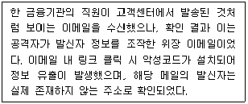
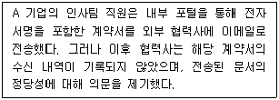
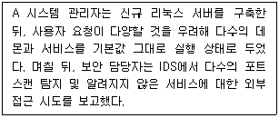
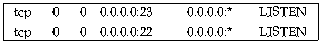
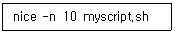
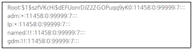
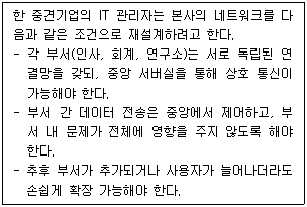
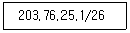
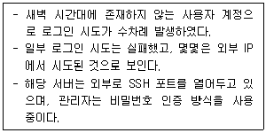

1과목: 정보보호개론
1. IPSec 프로토콜에 대한 설명으로 옳지 않은 것은?
2. 다음 중 네트워크 및 인터넷 보안 프로토콜(예: TLS, IPsec 등)을 정의하고 표준화하는 대표적인 국제 표준화 기구는?
3. 다음 중 포트 기반 취약점을 악용해 빠르게 확산되며, 메모리에 상주하고 네트워크 트래픽 과부하를 유발하여 DNS 장애 및 인터넷 접속 지연을 초래한 웜 공격 사례는?
4. 다음 중 비대칭형 암호화 방식(Asymmetric Encryption) 또는 공개키 기반 키 교환을 위한 알고리즘으로 가장 적절한 것은?
5. 다음과 같은 공격 기법으로 가장 적절한 것은?

6. 다음과 같은 상황일 때, 보안 서비스 관점에서 가장 핵심적으로 요구되는 기능은?

7. 다음 지문과 관련하여 보안 정책에 가장 적합한 시스템 관리자의 조치는?

8. 금융기관 또는 인터넷 환경에서 다수 사용자로부터 소액을 반복적으로 탈취하며, 피해자가 사건을 쉽게 인지하지 못하는 컴퓨터 사기 수법은?
9. 다음 중 비대칭키 암호 시스템의 사용자 수(n)에 따른 키 관리 특징으로 가장 적절한 설명은?
10. 온라인 전자상거래에서 신용카드 결제 시, 사용자의 본인 인증을 강화하여 무단 결제 및 사기 거래를 방지하기 위해 널리 사용되는 보안 기술은?
2과목: 운영체제
11. Linux 시스템에서 ′/dev′ 디렉터리에 대한 설명으로 가장 적절하지 않은 것은?
12. 전통적인 Linux 시스템에서, 시스템 부팅 시 가장 먼저 실행되어 PID 1번을 차지하고, ′/etc/inittab′ 파일을 읽어 실행 레벨(runlevel)을 결정한 뒤, 서비스들을 시작하는 등 시스템 초기화를 직접 수행하는 프로세스는?
13. 다음 중 Linux의 커널이 직접적으로 수행하지 않는 기능은?
14. Linux 시스템에서 마운트된 각 파일시스템의 전체 용량, 사용 중인 용량, 남은 용량을 확인할 수 있는 명령어는?
15. 관리자가 새로운 SSD 디스크 ′/dev/sdb′를 서버에 추가한 후, 파티션을 생성하기 위해 실행해야 할 명령어로 가장 적절한 것은?
16. 시스템 성능 저하가 발생한 Linux 서버에서 관리자가′free -h′ 명령어를 실행하였다. 이 명령어를 사용하는 주요 목적으로 가장 적절한 것은?
17. Linux 기반의 BIND DNS 서버에서 ′example.com′ 도메인의 zone 파일을 설정 중인 한 관리자는, SOA 레코드를 작성하면서 DNS 동작 오류를 방지하기 위한 설정 원칙을 검토하고 있다. 다음 중 SOA 레코드 설정 시 반드시 지켜야 할 사항으로 가장 적절한 것은?
18. 한 시스템 관리자가 Apache 웹 서버의 보안을 강화하기 위해 ′httpd.conf′ 파일을 검토하고 있다. 다음 중 보안상 가장 바람직하지 않은 설정은?
19. Linux에서 IP 주소를 호스트 이름으로 직접 연결할 때 사용하는 파일은?
20. Linux 서버의 포트 상태 점검 결과, 다음과 같은 두 개의 포트가 열린 것이 확인되었다. 관리자는 보안 강화를 위해 이 중 하나의 서비스를 즉시 비활성화하려고 한다. 보안상 가장 우선적으로 종료해야 할 서비스의 설명으로 적절한 것은?

21. Linux에서 root 유저로 로그인 한 후 ′cp -rf /etc/* ~/temp′ 라는 명령으로 복사를 하였는데, 여기서 ′~′ 문자가 의미하는 뜻은?
22. 시스템 관리자가 다음과 같은 명령어를 실행했다. 이 명령어에 대한 설명으로 가장 적절한 것은?

23. Linux 명령어 ′mv [옵션] file1 file2′에서, file2가 이미 존재하는 경우 덮어쓸 것인지 여부를 사용자에게 묻는 옵션은?
24. Linux 서버에서 파일의 권한 모드가 ′-rwxr---w-′로 설정되어 있다. 이 설정을 실무적으로 검토할 때, 가장 중요한 보안 점검 항목은?
25. Windows Server에서 Administrator 계정의 보안을 강화하려고 한다. 다음 중 Administrator 계정에 대해 권장되는 보안 설정으로 옳지 않은 것은?
26. Linux에서 ′ls -al′ 명령에 의하여 출력되는 정보로 옳지 않은 것은?
27. Linux 시스템의 shadow 파일 내용에 대한 설명으로 올바른 것은?

28. 다음 중 파일 시스템에 대한 설명으로 옳지 않은 것은?
29. IIS 웹 서버를 설치한 다음에는 기본 웹사이트 등록정보를 수정하여야 한다. 웹사이트에 접속하는 동시 접속자수를 제한하려고 할 때 어느 부분을 수정해야 하는가?
30. Linux에서 특정한 파일을 찾고자 할 때 사용하는 명령어는?
3과목: 네트워크
31. IP 주소와 서브넷 마스크의 역할에 대한 설명으로 옳지 않은 것은?
32. 다음 중 TCP와 UDP의 차이점에 대한 설명으로 옳지 않은 것은?
33. TCP/IP 모델에서 각 계층의 주요 역할에 대한 설명으로 옳지 않은 것은?
34. 다음 조건에 가장 적합한 네트워크 토폴로지 구성 방식은?

35. SNMP(Simple Network Management Protocol)에 대한 설명으로 옳지 않은 것은?
36. IPv6 프로토콜의 주소 길이는 몇 비트인가?
37. TCP 헤더 필드의 내용으로 옳지 않은 것은?
38. 아래 내용에 해당하는 서브넷 마스크 값은?

39. 데이터 링크 오류제어를 위한 ARQ 방식 중 오류가 발생한 프레임만을 재전송하는 방식으로, 전송 성능이 가장 우수한 것은?
40. TCP/IP 프로토콜을 이용해 클라이언트가 서버의 특정 포트에 접속하려고 할 때 서버가 해당 포트를 열고 있지 않다면 응답 패킷의 코드 비트에 특정 비트를 설정한 후 보내 접근할 수 없음을 통지하게 된다. 다음 중 이러한 비정상 연결 상황 처리에 사용되는 제어 비트는?
41. 네트워크 전송매체에 대한 설명으로 옳지 않은 것은?
42. 패킷(Packet)에 있는 정보로 옳지 않은 것은?
43. TCP/IP 프로토콜을 이용한 네트워크상에서 병목현상(Bottleneck)이 발생하는 이유로 가장 옳지 않은 것은?
44. 스위치 기반으로 운영되는 일반적인 이더넷 LAN 환경에 대한 설명으로 옳지 않은 것은?
45. OSI 7 Layer 중 응용 계층간의 정보 표현 방법의 상이를 극복하기 위한 계층으로, 보안을 위한 암호화/복호화 방법과 효율적인 전송을 위한 압축 기능이 들어 있는 계층은?
4과목: 보안
46. 버퍼 오버플로우(Buffer Overflow)의 설명으로 옳지 않은 것은?
47. Linux 서버 보안 점검 중, 내부 서비스에서 사용하지 않는 포트가 외부에서 접근 가능한 상태(LISTEN)로 확인되었다. 보안 담당자는 해당 포트를 차단하기 위해 firewalld를 사용하여 TCP 31337 포트를 외부에서 접근하지 못하도록 설정하려고 한다. 다음 중 정상적인 firewalld 명령어로서, 해당 포트를 즉시 차단할 수 있는 것은?
48. 보안 담당자가 Linux 서버 점검 중, 정상적인 서비스에서 사용하지 않는 포트가 비정상적으로 열려 있는 것을 발견하였다. 이 포트를 열고 있는 프로세스의 이름과 PID 정보를 가장 정확하게 확인할 때 입력해야 하는 명령어는?
49. TLS(Transport Layer Security) 프로토콜에 대한 설명으로 옳지 않은 것은?
50. 보안 담당자는 사내 Linux 서버에서 비정상적인 대량의 외부 접속 요청을 탐지하였다. 로그를 분석한 결과, 외부 IP 주소들이 내부 사설망 대역(예: 192.168.x.x, 10.x.x.x 등)을 출발지 주소로 사용하고 있는 것으로 나타났다. 이는 IP Spoofing 공격의 전형적인 징후로 판단된다. 다음 중 이러한 IP Spoofing 공격을 네트워크 차원에서 사전에 차단하는 가장 적절한 방법은?
51. SYN 플러딩 공격에 대한 설명으로 옳은 것은?
52. Linux 서버에서 시스템 점검을 위해 root 사용자만 로그인 가능하도록 설정하고, 다른 일반 사용자 계정의 로그인을 일시적으로 차단하려고 한다. 이때 사용하는 설정 파일은?
53. Linux 시스템에서 사용되는 파일 무결성 검사 도구인 Tripwire에 대한 설명으로 옳지 않은 것은?
54. 보안 담당자 A씨는 내부 개발 서버에서 다음과 같은 이상 징후를 발견하였다. A씨는 이와 같은 불법 로그인 시도 및 인증 실패 내역을 추적하기 위해 가장 우선적으로 확인해야 할 로그 파일을 살펴보고자 한다. 다음 중 이 상황에서 가장 먼저 확인해야 할 로그 파일로 적절한 것은?

55. 다음은 PGP(Pretty Good Privacy) 기반 암호화 기술에 대한 설명이다. 오늘날에는 GNU Privacy Guard(GPG)와 같은 OpenPGP 표준 구현을 통해 널리 사용되고 있다. 이 암호화 방식의 보안 특성 중 옳지 않은 것은?
56. 정보보안팀은 사내 네트워크에 Snort를 도입해 실시간 침입 탐지 시스템(IDS)으로 운영 중이다. Snort는 사전에 정의된 탐지 규칙(Rule Set)에 따라 트래픽을 모니터링하고, 일치하는 패턴이 감지되면 특정 동작을 수행한다. 다음 중 Snort가 트래픽을 탐지한 후 기본적으로 수행할 수 없는 동작은?
57. 시스템 관리자인 A씨는 리눅스 서버에서 한 시간마다 시스템 자원 상태를 점검하는 스크립트를 자동으로 실행하고자 한다. 복잡한 서비스 설정 없이, Linux 시스템에서 가장 간단하고 보편적인 방식으로 작업을 자동화하려고 한다. 다음 중 A씨가 스크립트를 배치할 위치로 가장 적절한 디렉터리는?
58. 보안 담당자는 사내 네트워크에서 이상하게 많은 ARP 패킷과 불규칙한 DNS 요청이 발생하는 것을 감지하고, 누군가 스니핑 또는 ARP Spoofing을 시도하고 있다고 의심하고 있다. 이에 따라 패킷 캡처 도구를 이용해 실시간 트래픽을 분석하고자 할 때 가장 적합한 도구는?
59. 보안 관리자는 외부 출장 중 사설 와이파이를 사용하는 직원들이 많은 점을 우려하고 있다. 사설 네트워크에서 패킷이 도청(Sniffing)될 가능성을 줄이기 위해 직원들이 회사 내부 서버에 접속할 때 전송 구간 전체를 안전하게 보호할 수 있도록 하려고 한다. 이러한 보안 목적을 달성하기 위한 가장 적절한 접근 방식은?
60. 회사 내부 네트워크에서 사용자의 로그인 정보와 이메일 내용이 외부로 유출되는 사고가 발생했다. 조사 결과, 공격자는 네트워크에 연결된 시스템에서 패킷 분석 도구를 이용해 통신 데이터를 몰래 수집하고 있었던 것으로 확인되었다. 이와 같은 데이터 도청 및 패킷 가로채기 공격 기법을 일컫는 용어는?